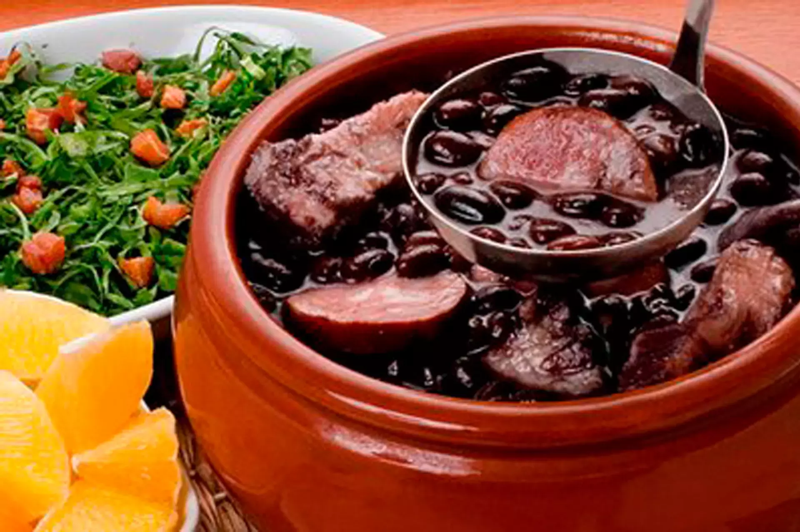

Seria a feijoada o verdadeiro "manjar dos deuses"?
Feijoada
Ingredientes:
1 - 600g de feijão-preto;
2 - 200g de costelinha de porco salgada;
3 - 200g de carne-seca em cubos;
4 - 100g de orelha de porco;
5 - 100g de rabo de porco;
6 - 100g de pé de porco;
7 - 100g de lombo de porco salgado em cubos;
8 - Suco de 1 limão;
9 - 2 folhas de louro;
10 - Sal e pimenta-do-reino a gosto;
11 - 1 cebola com 5 cravos-da-índia espetados;
12 - 8 xícaras (chá) de água;
13 - 1/4 de xícara (chá) de cachaça;
14 - 2 laranjas;
15 - 300g de linguiça calabresa, paio e portuguesa em fatias;
16 - 1 cebola em cubos;
17 - 5 dentes de alho picados.
Modo de preparo:
1 - Deixe o feijão de molho em água por 6 horas. Deixe a costelinha, a carne-seca, a orelha, o rabo, o pé e o lombo de molho em água por 24 horas na geladeira, trocando a água por 4 vezes. Escorra, lave com o suco de limão e coloque em uma panela com água. Leve ao fogo médio, deixe levantar fervura, escorra e repita o processo para retirar o excesso de gordura;
2 - Coloque as carnes em uma panela, adicione o feijão com a água do molho e complete com mais água. Leve ao fogo baixo. Acrescente o louro, sal, pimenta, a cebola espetada com os cravos, a cachaça e as duas laranjas inteiras, com casca furada com uma faca afiada. Deixe levantar fervura e cozinhe por 50 minutos, retirando a espuma que se forma na superfície, com uma colher. Coloque a linguiça na metade do cozimento. Teste a maciez das carnes com um garfo e retire conforme estiverem prontas;
3 - Corte os pedaços de carne em tamanhos de 3cm. Quando o feijão e as carnes estiverem prontas, volte à panela todos os pedaços. Aqueça uma frigideira com o óleo, em fogo médio, doure a cebola e o alho por 5 minutos e misture na panela. Retire a cebola espetada e as laranjas. Deixe levantar fervura e sirva, se desejar, acompanhada de arroz branco e couve refogada.